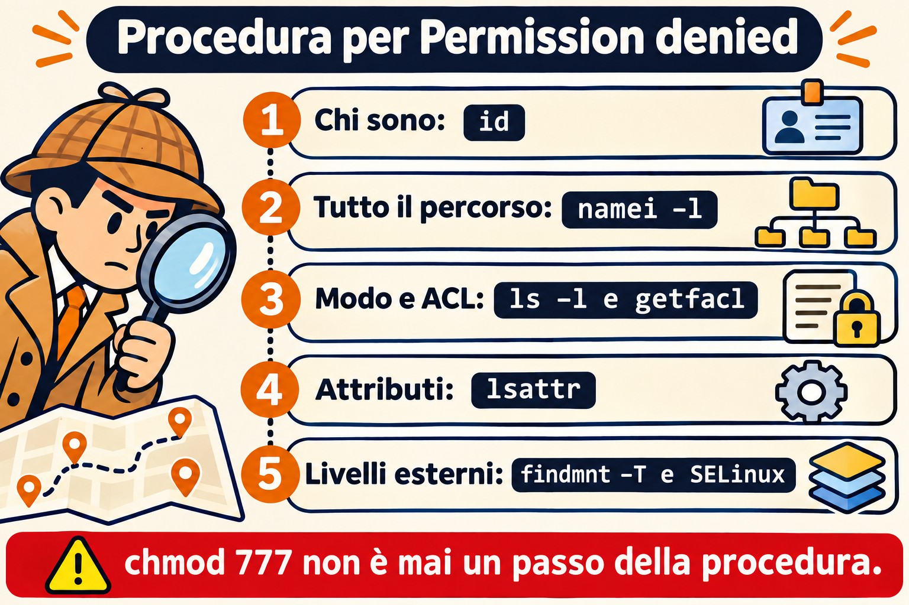
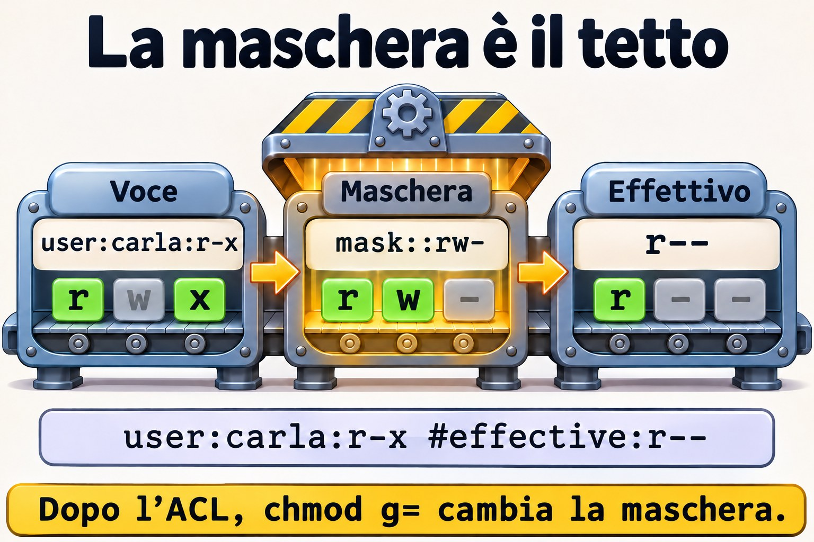
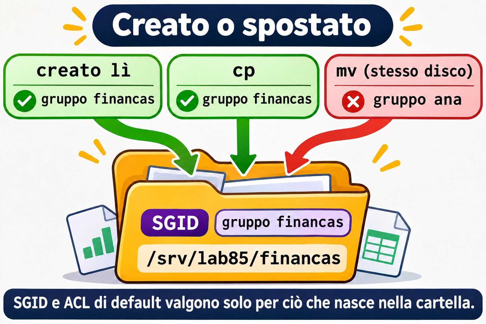

Lezione 8.5 · Permessi avanzati
Chi viene da Windows si aspetta ereditarietà e permessi effettivi in una scheda delle proprietà. In Linux le stesse risposte sono sparse tra bit speciali, ACL, attributi e opzioni di mount. In questa lezione monti una vera cartella condivisa e impari un metodo per risolvere qualsiasi "Permission denied". Alla fine arriva la Sfida dell'M8.
Il cuore di questa lezione: usare SGID e sticky nelle cartelle condivise; dare accesso con ACL e ACL predefinita; capire la maschera; fare l'audit dei SUID; e seguire il percorso di diagnosi:
id,namei -l,getfacl,lsattr,findmnt -Te SELinux. Il resto è approfondimento.
| Scheda | |
|---|---|
| Modulo | M8 · File a fondo, lezione 5 di 5, con la Sfida del modulo |
| Quando | Settimana 13 |
| Alla fine | Configuri un accesso condiviso con precisione e trovi la causa di qualsiasi "Permission denied" |
| Prerequisiti | Lezioni 2.6, 2.7, 2.8 e 8.2 |
| Durata | circa 2h30, più 1h per la Sfida |
| Snapshot | m8a5-inicio e m8a5-fim su rocky-lab e debian-lab |
1 · Riscaldamento
Rispondi prima di leggere.
- Un file ha permessi
644, ma l'utente non riesce a leggerlo. Quali cause ti vengono in mente? - Cosa fa SGID su una cartella?
- Cosa significa il
+alla fine dei permessi inls -l?
2 · Perché conta
| La richiesta | La risposta sbagliata | Cosa provoca |
|---|---|---|
| "Non riesco ad accedere alla cartella" | chmod -R 777 | Apre tutto a tutti, e cancella l'informazione su chi dovrebbe avere accesso |
| "Il collega non apre il file che ho creato io" | Correggere a mano ogni giorno | Mancava SGID, oppure l'ACL predefinita |
| "Ho aggiunto l'utente al gruppo e non funziona" | Aggiungerlo di nuovo | La vecchia sessione non conosce il gruppo |
| "Nemmeno root riesce a cancellare quel file" | Riavviare | È l'attributo immutabile |
"Lo script ha x e dà Permission denied" | Rifare chmod +x | Il disco è stato montato con noexec |
3 · Modello mentale
Arrivare a un file significa attraversare un edificio. Ti serve il permesso per ogni porta del percorso, e non solo per l'ultima stanza. La
xsulla cartella è il diritto di passare dalla porta. Poi vengono i badge, valutati in quest'ordine: proprietario, persone citate nelle ACL, gruppi e tutti gli altri. E ci sono livelli all'esterno dell'edificio: il lucchetto della stanza (chattr +i), il regolamento del terreno (opzioni di mount) e la sicurezza esterna (SELinux). Ognuno di loro può dire no.
Permission denied ou Operation not permitted — siga na ordem:
1. Quem sou? id grupo novo exige login novo
2. O caminho todo namei -l /a/b/c.txt falta x em alguma pasta?
3. Modo e dono ls -ld, ls -l
4. ACL getfacl máscara, entrada específica
5. Atributos lsattr i (imutável), a (só adicionar)
6. Montagem findmnt -T ARQUIVO ro, noexec, nosuid
7. Controle externo getenforce, ausearch SELinux; AppArmor no Debian

chmod 777 non è mai un passo.Ponte Windows
| In Windows | In Linux | Dove il paragone inganna |
|---|---|---|
| Scheda "Accesso effettivo" | namei -l e getfacl | In Linux sei tu a mettere insieme i pezzi |
| ACE ereditata | ACL predefinita (-d) | Vale solo per ciò che viene creato dopo, e nulla viene "propagato" |
| Gruppo creatore, nell'ereditarietà | SGID su cartella | |
| Condivisione + NTFS | Samba + permessi | Due livelli, come in Windows |
| ACE "Nega" | Voce u:nome:--- | Non esiste un "nega" esplicito: funziona con l'ordine di valutazione |
| Attributo sola lettura | chattr +i | Il +i blocca anche root |
| Logoff per aggiornare il token | Nuovo login | È esattamente lo stesso problema |
4 · L'essenziale
Bit speciali
| Bit | Su un file | Su una cartella | Esempio |
|---|---|---|---|
| SUID (4000) | Gira come il proprietario | Nessun effetto | /usr/bin/passwd |
| SGID (2000) | Gira come il gruppo | Eredita il gruppo per ciò che viene creato | Cartella di team |
| Sticky (1000) | Nessun effetto | Solo il proprietario cancella ciò che è suo | /tmp |
Negli script, Linux ignora SUID. La s minuscola significa che esiste anche la x, e la S maiuscola significa che manca la x.
umask
La umask toglie bit dal valore predefinito: 666 per i file e 777 per le cartelle. Con 022 ottieni 644 e 755. Con 027, 640 e 750. Si imposta per utente in ~/.bashrc, e per servizio con UMask= nella unit.
ACL
| Voglio... | Comando |
|---|---|
| Vedere | getfacl CAMINHO |
| Dare accesso a un utente | setfacl -m u:NOME:rx CAMINHO |
| A un gruppo | setfacl -m g:NOME:rx CAMINHO |
| Valere per ciò che verrà creato | setfacl -d -m u:NOME:rx PASTA |
| Su tutto ciò che esiste già | setfacl -R -m u:NOME:rX PASTA |
| Togliere una voce | setfacl -x u:NOME CAMINHO |
| Cancellare tutta l'ACL | setfacl -b CAMINHO |
| Copiare l'ACL | getfacl A | setfacl --set-file=- B |
La maschera è il tetto delle voci degli utenti citati e dei gruppi. Quando la riga di getfacl mostra #effective:, l'accesso reale è minore di quello scritto. Dopo un'ACL, chmod g= sul file cambia la maschera, e non il gruppo.
La X maiuscola dà x solo alle cartelle e ai file già eseguibili. È la scelta giusta per -R.


Attributi
| Voglio... | Comando |
|---|---|
| Vedere | lsattr ARQUIVO |
| Bloccare | sudo chattr +i ARQUIVO |
| Solo aggiungere in coda | sudo chattr +a ARQUIVO |
| Sbloccare | sudo chattr -i ARQUIVO |
Rocky × Debian
| Rocky | Debian | |
|---|---|---|
acl | dnf install acl | apt install acl |
| Controllo esterno | SELinux: getenforce, ausearch | AppArmor: sudo aa-status |
Se su Rocky hai un "Permission denied" con tutto a posto, guarda SELinux, tema dell'M12: sudo ausearch -m avc -ts recent.
5 · Lab guidato
Passo 0 · Snapshot e utenti. In Proxmox: qm snapshot 201 m8a5-inicio e qm snapshot 202 m8a5-inicio. Su rocky-lab:
sudo dnf install -y acl
sudo groupadd financas
sudo useradd -m -G financas ana
sudo useradd -m -G financas beto
sudo useradd -m carla
sudo mkdir -p /srv/lab85/financas
sudo chown root:financas /srv/lab85/financas
sudo chmod 770 /srv/lab85/financasGli utenti non hanno bisogno di password: agirai come loro con sudo -u.
Passo 1 · Senza SGID, con SGID.
sudo -u ana touch /srv/lab85/financas/sem-sgid.txt
sudo ls -l /srv/lab85/financas
sudo chmod 2770 /srv/lab85/financas
sudo -u ana touch /srv/lab85/financas/com-sgid.txt
sudo ls -ld /srv/lab85/financas
sudo ls -l /srv/lab85/financasIl primo ha il gruppo ana, e il secondo financas. La cartella mostra drwxrws---.
Passo 2 · Sticky.
sudo -u beto rm -f /srv/lab85/financas/com-sgid.txt
sudo -u ana touch /srv/lab85/financas/da-ana.txt
sudo chmod 3770 /srv/lab85/financas
sudo -u beto rm -f /srv/lab85/financas/da-ana.txt
sudo ls -l /srv/lab85/financasPrima dello sticky, Beto cancella il file di Ana, perché ha w sulla cartella. Dopo, riceve Operation not permitted.
Passo 3 · ACL per chi non è del gruppo.
sudo -u carla ls /srv/lab85/financas
sudo setfacl -m u:carla:rx /srv/lab85/financas
sudo -u carla ls /srv/lab85/financas
sudo getfacl /srv/lab85/financas
ls -ld /srv/lab85/financasIl primo fallisce e il secondo funziona. Ora ls mostra un +.
Passo 4 · ACL predefinita.
sudo setfacl -d -m u:carla:rx /srv/lab85/financas
sudo -u ana bash -c 'echo saldo > /srv/lab85/financas/novo.txt'
sudo getfacl /srv/lab85/financas/novo.txt
sudo -u carla cat /srv/lab85/financas/novo.txt
sudo -u carla bash -c 'echo x >> /srv/lab85/financas/novo.txt'Carla legge e non scrive. Il file ha ereditato la sua voce, e user:carla:r-x #effective:r-- mostra che la maschera ha tagliato la x.
Passo 5 · La maschera.
sudo setfacl -m m::--- /srv/lab85/financas/novo.txt
sudo getfacl /srv/lab85/financas/novo.txt
sudo -u carla cat /srv/lab85/financas/novo.txt
sudo setfacl -m m::rw /srv/lab85/financas/novo.txt
sudo -u carla cat /srv/lab85/financas/novo.txtLa sua voce resta scritta, ma l'effettivo è diventato ---, e l'accesso cade.
Passo 6 · Audit dei SUID.
ls -l /usr/bin/passwd
sudo find / -xdev -type f -perm -4000 -lsPasso 7 · Il percorso di diagnosi.
sudo -u carla id
sudo namei -l /srv/lab85/financas/novo.txt
sudo getfacl /srv/lab85/financas/novo.txt
sudo lsattr /srv/lab85/financas/novo.txt
sudo findmnt -T /srv/lab85/financas/novo.txt
getenforcePasso 8 · debian-lab. Installa acl e ripeti i passi 0, 1, 3 e 4. Al posto di getenforce, usa sudo aa-status | head.
Decidi 1
Una nuova analista deve leggere la cartella dei contratti, ma non può entrare nel gruppo che ha anche accesso in scrittura. Cosa fai?
A) chmod o+rx, così può entrare. B) Metterla nel gruppo. C) setfacl -R -m u:NOME:rX PASTA e setfacl -d -m u:NOME:rX PASTA.
Scegli un'opzione prima di continuare.
| Se hai scelto | Risultato | Perché |
|---|---|---|
| A | Apre a tutti | Ogni utente della macchina può leggere |
| B | Va oltre la richiesta | Ottiene la scrittura |
| C | Giusto | Vale per l'esistente e per il futuro, solo per lei |
Da ricordare: l'ACL dà un'eccezione precisa, senza toccare il modello principale.
Decidi 2
Uno script ha 755 e risponde Permission denied in una cartella con tutto a posto. Prossimo passo?
A) chmod 777. B) findmnt -T script, per vedere opzioni come noexec. C) Copiarlo a root.
Scegli un'opzione prima di continuare.
| Se hai scelto | Risultato | Perché |
|---|---|---|
| A | Non cambia nulla | Il problema non è nel modo |
| B | Giusto | È il punto successivo del percorso |
| C | Aggira senza capire | Scavalca una regola messa di proposito |
Da ricordare: quando il modo è giusto, guarda gli altri livelli.
6 · Rompi e ripara
Guasto 1 · Nemmeno root ci riesce
sudo touch /srv/lab85/imutavel.conf
sudo chattr +i /srv/lab85/imutavel.conf
sudo rm /srv/lab85/imutavel.confSintomo: Operation not permitted, anche come root.
Diagnosi: lsattr /srv/lab85/imutavel.conf mostra i.
Riparazione: sudo chattr -i /srv/lab85/imutavel.conf e sudo rm /srv/lab85/imutavel.conf.
Nella vita reale: non sempre è una protezione dell'amministratore. Su un server compromesso, gli attaccanti usano chattr +i per bloccare i file.
Guasto 2 · Il gruppo che non ha preso
sudo usermod -aG financas $USER
id
ls /srv/lab85/financasSintomo: Permission denied, con l'utente già nel gruppo.
Diagnosi: id non mostra financas, ma id $USER sì. Il processo attuale è stato creato prima della modifica.
Riparazione: esci e rientra, oppure usa sg financas -c 'ls /srv/lab85/financas'. Poi ripristina: sudo gpasswd -d $USER financas.


Guasto 3 · Il file arrivato con un altro gruppo
sudo -u ana bash -c 'echo a > /home/ana/mov.txt; chmod 640 /home/ana/mov.txt'
sudo -u ana mv /home/ana/mov.txt /srv/lab85/financas/
sudo -u beto cat /srv/lab85/financas/mov.txt
sudo ls -l /srv/lab85/financas/mov.txtSintomo: Permission denied, in una cartella con SGID.
Diagnosi: il gruppo è ana. SGID e ACL predefinita valgono solo per ciò che viene creato lì. mv sullo stesso file system conserva i dati del file originale.
Riparazione: sudo chgrp financas /srv/lab85/financas/mov.txt. Nella pratica, crea il file nella cartella, oppure preferisci cp.
Pulizia
sudo rm -r /srv/lab85
sudo userdel -r beto
sudo userdel -r carla
sudo groupdel financasL'utente ana resta per la Sfida.
7 · Trappole
| Trappola | Cosa succede | Come evitarla |
|---|---|---|
chmod -R 777 | Distrugge il modello, e senza storico | Segui il percorso di diagnosi |
chmod -R con x sui file | Tutto diventa eseguibile | Usa X |
usermod -G senza -a | Rimuove dagli altri gruppi | usermod -aG |
chmod su un file con ACL | Cambia la maschera | Controlla con getfacl |
Dimenticare la x in una cartella intermedia | Nega nonostante il file sia aperto | namei -l |
| ACL predefinita da cui ti aspetti effetto sull'esistente | Vale solo per il nuovo | Usa anche -R |
Confondere Permission denied e Operation not permitted | Cerchi nel posto sbagliato | Il secondo fa pensare ad attributo, sticky o capability |
| SUID su uno script | Viene ignorato | Usa sudo con una regola |
cp e tar senza preservare | Perdono le ACL | cp -a, tar --acls |
8 · Quiz
Rispondi senza guardare. Le soluzioni sono alla fine della lezione.
- Qual è l'ordine di valutazione tra proprietario, utenti citati, gruppi e altri?
- Cosa indica
#effective:? - Qual è la differenza tra
-me-d -minsetfacl? - Perché un
mvnon eredita il gruppo della cartella con SGID? - Qual è il comando che mostra i permessi a ogni gradino di un percorso?
- Perché un utente appena aggiunto a un gruppo continua a non avere accesso?
9 · Promemoria
Da sapere a memoria:
| Voglio... | Comando |
|---|---|
| Percorso intero | namei -l CAMINHO |
| ACL | getfacl CAMINHO |
| Dare accesso | setfacl -m u:NOME:rx CAMINHO |
| Per ciò che verrà | setfacl -d -m u:NOME:rx PASTA |
| Cartella di team | chmod 2770 PASTA |
| Attributi | lsattr ARQUIVO |
| Mount | findmnt -T ARQUIVO |
Da consultare:
| Voglio... | Comando |
|---|---|
| Togliere l'ACL | setfacl -x u:NOME C, setfacl -b C |
| Maschera | setfacl -m m::rx C |
| Gruppo nuovo senza rifare il login | sg GRUPO -c 'comando' |
| SUID | sudo find / -xdev -type f -perm -4000 -ls |
| SELinux | getenforce, sudo ausearch -m avc -ts recent |
| AppArmor | sudo aa-status |
Flashcard:
- SGID sulla cartella → eredita il gruppo.
- Sticky → solo il proprietario cancella.
+inls→ c'è un'ACL.#effective→ la maschera ha tagliato.- Script
755negato →noexec. - Gruppo nuovo → nuovo login.
10 · Checklist e chiusura
- [ ] Configuro una cartella di team con SGID e sticky
- [ ] Do un accesso preciso con le ACL, anche per il futuro
- [ ] Leggo la maschera
- [ ] Seguo a memoria il percorso di diagnosi
- [ ] So cosa provocano
chattr,noexece SELinux - [ ] Faccio l'audit dei SUID
Ultimo esercizio, senza guardare la lezione: su debian-lab, crea un gruppo e una cartella in cui i membri scrivono, ciascuno cancella solo ciò che è suo, e un utente esterno può solo leggere, compresi i file futuri. Dimostralo con sudo -u. Poi ripulisci.
Snapshot di fine (in Proxmox):
qm snapshot 201 m8a5-fim
qm snapshot 202 m8a5-fim11 · Nella vita reale
Missione, sola lettura. Su un server Linux che amministri (o con autorizzazione), lancia solo:
sudo find / -xdev -type f -perm -4000 -ls
sudo find / -xdev -type d -perm -o+w ! -perm -1000 -ls | head -n 20
findmnt -no TARGET,OPTIONS -t xfs,ext4,tmpfs | head -n 20
getenforce 2>/dev/null
sudo aa-status 2>/dev/null | head -n 5Domande a cui rispondere:
- Qualche SUID fuori dal comune?
- Ci sono cartelle scrivibili da tutti senza sticky?
- Quali mount hanno
noexeconosuid? - Qual è il controllo esterno attivo?
Diario: annota gli elementi che meritano attenzione. Non modificare nulla.
Domani, senza guardare: scrivi le sette tappe del percorso di diagnosi.
12 · Approfondire quando vuoi
capabilities,getcap,setcap: privilegi senza SUID./etc/fstabconnoexec,nosuid,nodev: hardening.- Samba e permessi: tornano nella parte sui servizi di rete.
- SELinux in profondità: M12.
auditd: chi ha modificato quel file.
DeepTutor (http://10.1.0.149:3782, KB "Curso Linux Sysadmin"):
!explica a máscara das ACLs POSIX!feynman por que precisamos de x em uma pasta!quiz Aula 8.5, 5 perguntas sobre ACL e bits especiais
Sfida dell'M8 · Tre porte chiuse
La missione: l'utente
anaricevePermission deniedin tre situazioni diverse, ciascuna con la sua causa. Trova e correggi ognuna con il minimo permesso possibile.
Non c'è un passo a passo. I suggerimenti sono nelle Soluzioni, ma prova prima senza.
Prima di cominciare: qm snapshot 201 m8-desafio-inicio. Poi prepara lo scenario su rocky-lab, senza cercare di capirlo:
mkdir -p ~/labm8
id ana || sudo useradd -m ana
sudo mkdir -p /srv/labm8/projetos/2026 /srv/labm8/compartilhado /srv/labm8/scripts
echo relatorio | sudo tee /srv/labm8/projetos/2026/relatorio.txt > /dev/null
sudo chmod 644 /srv/labm8/projetos/2026/relatorio.txt
sudo chmod 700 /srv/labm8/projetos
echo dados | sudo tee /srv/labm8/compartilhado/dados.txt > /dev/null
sudo chmod 644 /srv/labm8/compartilhado/dados.txt
sudo setfacl -m u:ana:--- /srv/labm8/compartilhado/dados.txt
sudo mount -t tmpfs -o noexec,mode=755 tmpfs /srv/labm8/scripts
printf '#!/bin/bash\necho ok\n' | sudo tee /srv/labm8/scripts/rodar.sh > /dev/null
sudo chmod 755 /srv/labm8/scripts/rodar.shI tre problemi:
sudo -u ana cat /srv/labm8/projetos/2026/relatorio.txt
sudo -u ana cat /srv/labm8/compartilhado/dados.txt
sudo -u ana /srv/labm8/scripts/rodar.shRequisiti:
- Per ciascuno, scrivi in
~/labm8/relatorio.txt: la causa, il comando che l'ha rivelata e la correzione. - Niente
chmod 777. Gli altri utenti della macchina non devono ottenere accesso al report né ai dati. - La correzione non può essere copiare i file altrove.
Criteri di accettazione:
- [ ] I tre comandi qui sopra funzionano come
ana - [ ]
sudo find /srv/labm8 -perm -o+w ! -type lnon mostra nulla - [ ]
sudo -u nobody cat /srv/labm8/projetos/2026/relatorio.txtresta negato - [ ] Il report ha tre cause diverse, ciascuna con la prova
Alla fine: ripulisci e fai lo snapshot:
sudo umount /srv/labm8/scripts
sudo rm -r /srv/labm8
sudo userdel -r anaIn Proxmox: qm snapshot 201 m8-desafio-fim.
Hai chiuso l'M8. Ora sai dove vive ogni cosa, trovi qualsiasi file, copi con prova e risolvi un "Permission denied" seguendo il percorso di diagnosi. Il prossimo modulo è nel piano del corso.
Soluzioni commentate
Riscaldamento
- Mancanza di
xin una cartella del percorso, ACL specifica, attributo, opzione di mount, SELinux o AppArmor. - Ciò che viene creato al suo interno eredita il gruppo della cartella.
- Che esiste un'ACL oltre al modo di base.
Quiz
- Proprietario; poi utenti citati; poi i gruppi, tramite il gruppo proprietario e le voci di gruppo; infine gli altri. Vale la prima categoria che si applica.
- Che la maschera ha ridotto l'accesso scritto nella voce.
-mmodifica l'ACL di accesso di ciò che esiste già.-d -mdefinisce l'ACL predefinita, ereditata da ciò che verrà creato.- Perché
mvsullo stesso disco non crea un file: cambia solo il nome di posto, e l'inode mantiene il gruppo. namei -l.- Perché i gruppi vengono definiti al login, e i processi già aperti mantengono la lista precedente.
Suggerimenti per la Sfida
Leggine una alla volta, solo quando sei bloccato.
- Primo:
namei -lsul percorso del report. Quale cartella non lascia passareana? - Correzione minima:
sudo setfacl -m u:ana:x /srv/labm8/projetos. Anchechmod o+xaprirebbe il passaggio a tutti, enobodyresta negato solo con l'ACL. - Secondo:
ls -lmostra+. Lanciagetfacl. Togli la voce consudo setfacl -x u:ana /srv/labm8/compartilhado/dados.txt. - Terzo:
findmnt -T /srv/labm8/scripts/rodar.shmostranoexec. Rimonta consudo mount -o remount,exec /srv/labm8/scripts.